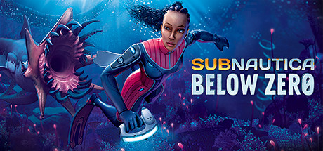
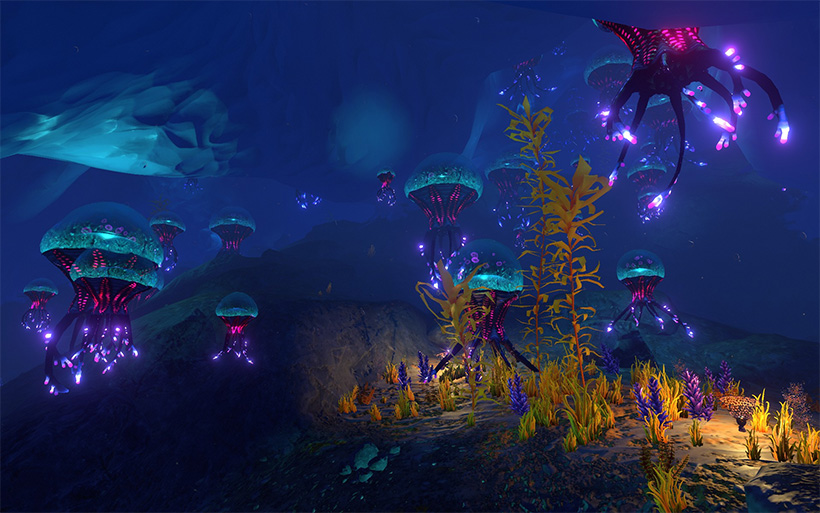
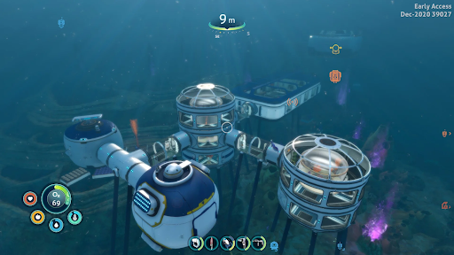
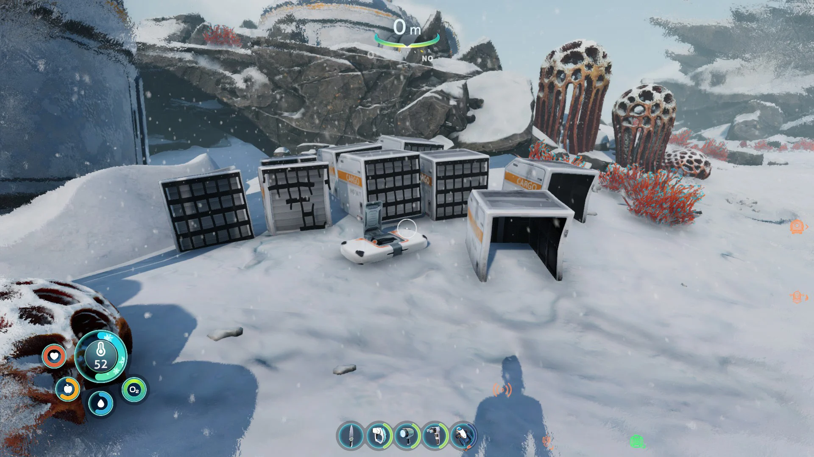

Subnautica Below Zero





Lançamento:Maio de 2021
Plataformas:PC, PlayStation 4, PlayStation 5, Xbox One, Xbox Series X/S, e Nintendo Switch
Subnautica: Below Zero é a sequência do aclamado jogo de sobrevivência subaquática Subnautica, desenvolvido pela Unknown Worlds Entertainment. Ambientado em um planeta alienígena coberto por gelo, o jogo oferece uma nova e emocionante experiência de exploração e sobrevivência nas profundezas geladas.
Características Principais
- Exploração Subaquática: Navegue por um vasto mundo subaquático e subglacial, repleto de ecossistemas únicos e criaturas marinhas adaptadas ao ambiente congelante.
- Sobrevivência e Construção: Gerencie sua saúde, comida e oxigênio enquanto constrói bases e veículos para explorar o ambiente hostil e coletar recursos essenciais.
- Narrativa e Missão: Siga a história de Robin Ayou, uma pesquisadora que busca respostas sobre a misteriosa instalação de pesquisa e o desaparecimento de sua irmã. A narrativa envolve mistérios e desafios, com uma série de eventos e descobertas que impulsionam a trama.
- Ambiente Gelado e Novas Mecânicas: Enfrente o frio extremo e novas mecânicas de jogo relacionadas ao ambiente gelado, incluindo novos biomas e desafios específicos de uma região congelada.
- Gráficos e Design: A estética visual do jogo combina gráficos impressionantes com um design imersivo, criando uma atmosfera de tensão e beleza ao explorar os mistérios do fundo do mar e das paisagens geladas.
Subnautica: Below Zero expande e aprimora a fórmula do original com um novo cenário e desafios, oferecendo uma experiência de sobrevivência subaquática rica e envolvente. Com uma combinação de exploração fascinante e uma narrativa intrigante, é uma excelente continuação para os fãs da série e novos jogadores.